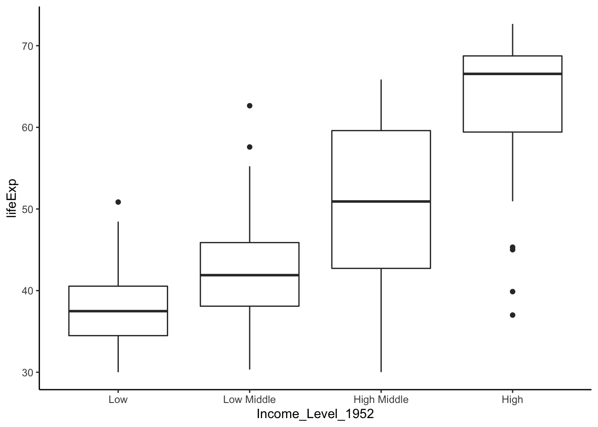
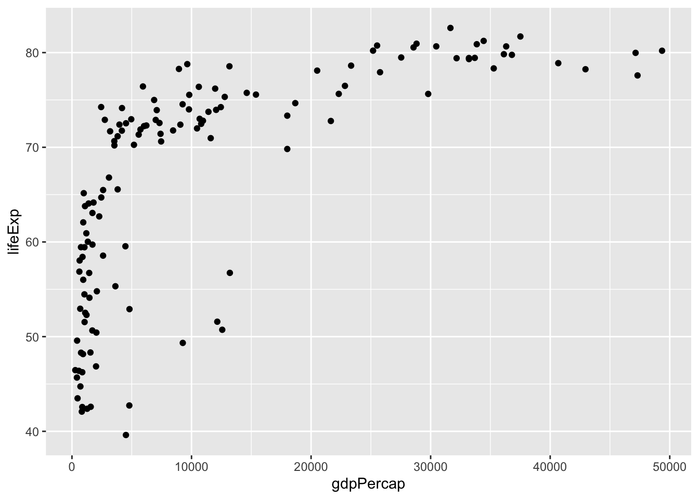
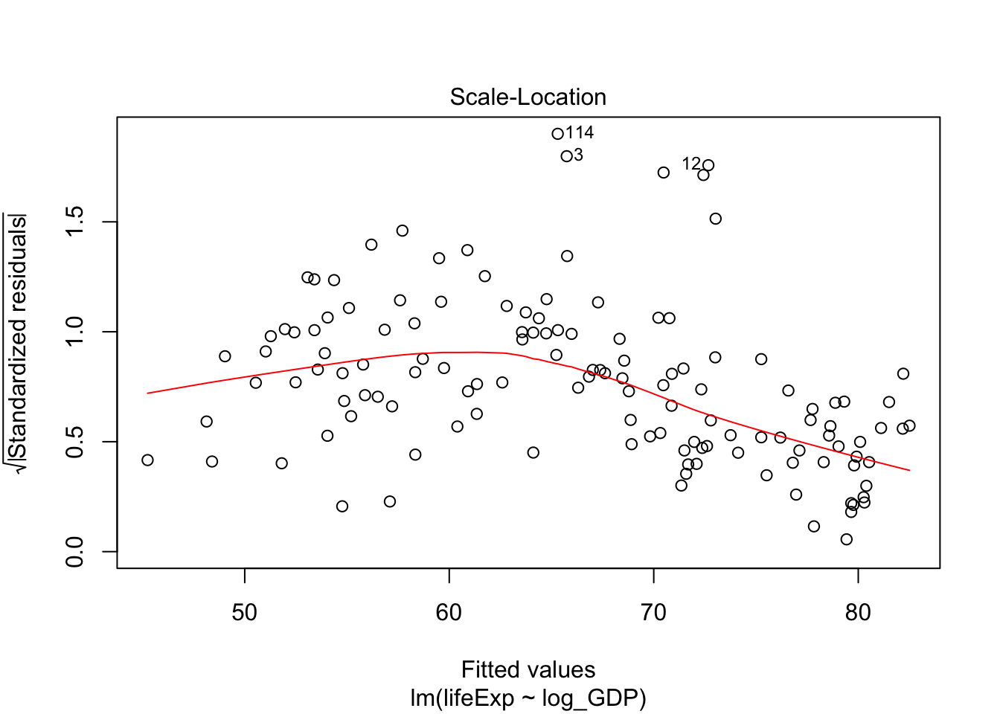
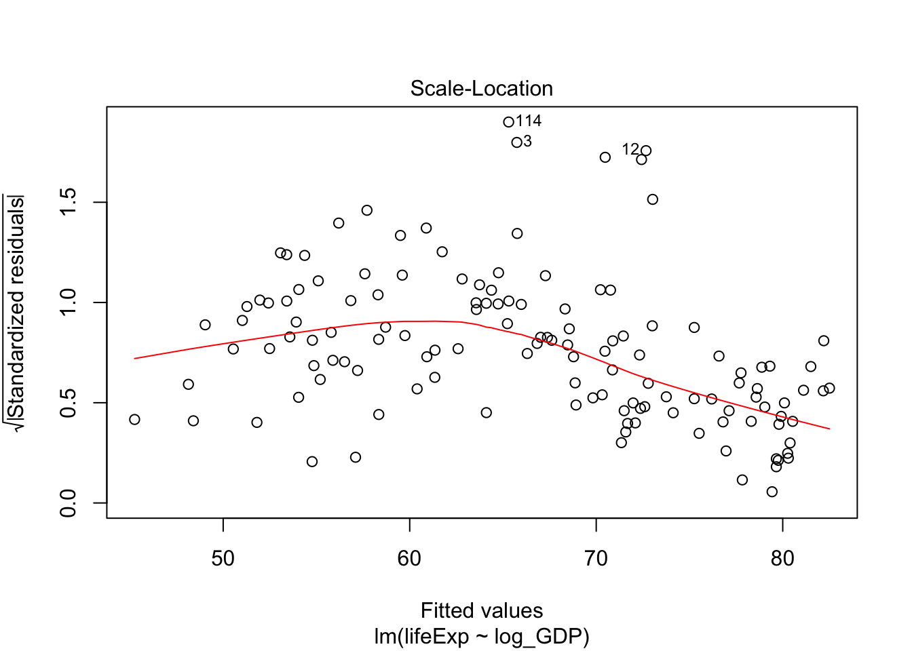

7 Comparing multiple means
Throughout this lab, we will provide a pipeline to help you wrangle data, perform statistical analyses, and (perhaps most importantly) visualize data in R. Here, we will learn how to compare the means using parametric tests and medians using non-parametric tests of multiple groups.
7.1 Loading packages
Let’s load the usual packages.
7.2 Merging datasets
In this section, we will learn how to merge datasets. We will use something called democracy index (democracy score) and convert it into categorical data. As the name suggests, democracy index measures the degree of democracy of a country on a scale from 0 to 10, with higher scores being correlated with greater democracy. In our dataset, however, the scale is from -10 to 10. This data set has been pre-cleaned and made available on gapminder.
Let’s load our dataset.
The first thing you should do with new data is explore it. Since the output is quite large, we’ll only show the first row, but you should definitely take a deeper look.
## country X1800 X1801 X1802 X1803 X1804 X1805 X1806 X1807 X1808 X1809 X1810
## 1 Afghanistan -6 -6 -6 -6 -6 -6 -6 -6 -6 -6 -6
## X1811 X1812 X1813 X1814 X1815 X1816 X1817 X1818 X1819 X1820 X1821 X1822 X1823
## 1 -6 -6 -6 -6 -6 -6 -6 -6 -6 -6 -6 -6 -6
## X1824 X1825 X1826 X1827 X1828 X1829 X1830 X1831 X1832 X1833 X1834 X1835 X1836
## 1 -6 -6 -6 -6 -6 -6 -6 -6 -6 -6 -6 -6 -6
## X1837 X1838 X1839 X1840 X1841 X1842 X1843 X1844 X1845 X1846 X1847 X1848 X1849
## 1 -6 -6 -6 -6 -6 -6 -6 -6 -6 -6 -6 -6 -6
## X1850 X1851 X1852 X1853 X1854 X1855 X1856 X1857 X1858 X1859 X1860 X1861 X1862
## 1 -6 -6 -6 -6 -6 -6 -6 -6 -6 -6 -6 -6 -6
## X1863 X1864 X1865 X1866 X1867 X1868 X1869 X1870 X1871 X1872 X1873 X1874 X1875
## 1 -6 -6 -6 -6 -6 -6 -6 -6 -6 -6 -6 -6 -6
## X1876 X1877 X1878 X1879 X1880 X1881 X1882 X1883 X1884 X1885 X1886 X1887 X1888
## 1 -6 -6 -6 -6 -6 -6 -6 -6 -6 -6 -6 -6 -6
## X1889 X1890 X1891 X1892 X1893 X1894 X1895 X1896 X1897 X1898 X1899 X1900 X1901
## 1 -6 -6 -6 -6 -6 -6 -6 -6 -6 -6 -6 -6 -6
## X1902 X1903 X1904 X1905 X1906 X1907 X1908 X1909 X1910 X1911 X1912 X1913 X1914
## 1 -6 -6 -6 -6 -6 -6 -6 -6 -6 -6 -6 -6 -6
## X1915 X1916 X1917 X1918 X1919 X1920 X1921 X1922 X1923 X1924 X1925 X1926 X1927
## 1 -6 -6 -6 -6 -6 -6 -6 -6 -6 -6 -6 -6 -6
## X1928 X1929 X1930 X1931 X1932 X1933 X1934 X1935 X1936 X1937 X1938 X1939 X1940
## 1 -6 -6 -6 -6 -6 -6 -6 -8 -8 -8 -8 -8 -8
## X1941 X1942 X1943 X1944 X1945 X1946 X1947 X1948 X1949 X1950 X1951 X1952 X1953
## 1 -8 -8 -8 -8 -10 -10 -10 -10 -10 -10 -10 -10 -10
## X1954 X1955 X1956 X1957 X1958 X1959 X1960 X1961 X1962 X1963 X1964 X1965 X1966
## 1 -10 -10 -10 -10 -10 -10 -10 -10 -10 -10 -7 -7 -7
## X1967 X1968 X1969 X1970 X1971 X1972 X1973 X1974 X1975 X1976 X1977 X1978 X1979
## 1 -7 -7 -7 -7 -7 -7 -7 -7 -7 -7 -7 0 -10
## X1980 X1981 X1982 X1983 X1984 X1985 X1986 X1987 X1988 X1989 X1990 X1991 X1992
## 1 -10 -10 -10 -10 -10 -10 -10 -10 -10 -8 -8 -8 0
## X1993 X1994 X1995 X1996 X1997 X1998 X1999 X2000 X2001 X2002 X2003 X2004 X2005
## 1 0 0 0 -7 -7 -7 -7 -7 NA NA NA NA NA
## X2006 X2007 X2008 X2009 X2010 X2011
## 1 NA NA NA NA NA NADon’t forget about str() and summary()!
As you can see, there is a lot of missing data (denoted by NA). NA values are often problematic for analyses, so we would like to either remove them or impute (estimate) them. In our case, let’s get rid of the rws with missing data for the year 2007 (the X2007 column).
dem07 <- democracy.raw %>%
select(country, X2007) %>% # choose
filter(!is.na(X2007)) # selecting all non-NA rowsHere, is.na() will return TRUE for missing data. Recall that ! is the NOT logical operator (i.e., !TRUE is equivalent to FALSE and vice versa. It follows that !is.na() returns true for non-empty data.
Let’s take a looks at how the democracy score is distributed. Here, I’d like to treat each democracy score as a factor (discrete value).

Before we do anything, let’s look at some potentially interesting counts. First, we’ll look at two ways to count “low-level” countries. To do so, we will arbitrarily define any democracy score \(\leq\) -3 as low-level. Now, we will count the number of countries in each group.
## [1] 39## [1] 39Let’s define medium-level countries as having a democracy score betwen -2 and 5 inclusive.
## [1] 32## [1] 32Exercise: count the number of high-level countries using both base R and dplyr. High-level countries will be defined as those with democracy score greater or equal to 6.
Now let’s actually assign a new categorical variable to each country (row) using the cut() function. Let’s call the new row demLev (our shorthand for democracy level).
tempDemLev <- cut(dem07$X2007,
c(-Inf, -2.5, 4.5, Inf),
c("LowDem", "MidDem", "HighDem"))
dem07$demLev <- tempDemLev # base R method
# dem07 <- dem07 %>% mutate(demLev = tempDemLev) # dplyr method
head(dem07)## country X2007 demLev
## 1 Albania 9 HighDem
## 2 Algeria 2 MidDem
## 3 Angola -2 MidDem
## 4 Argentina 8 HighDem
## 5 Armenia 5 HighDem
## 6 Australia 10 HighDemNote: The first argument for cut() takes a vector, the second takes the vector for cutoff thresholds, and the third are names of the bins defined by the cutoffs.
We can now merge this new data with gapminder. The main idea of merging is to add the new variables as columns. The identifier of our observations will be country. Since we are taking data from different sources, a given country might exist in one data frame but not the other. Furthermore, the two data sets might use different names for the countries. Before merging, let’s check the data we want to merge. Note that str_detect() finds all instances where a particular string is in a column.
## country X2007 demLev
## 1 North Korea -10 LowDem
## 2 South Korea 8 HighDem## # A tibble: 24 x 6
## country continent year lifeExp pop gdpPercap
## <fct> <fct> <int> <dbl> <int> <dbl>
## 1 Korea, Dem. Rep. Asia 1952 50.1 8865488 1088.
## 2 Korea, Dem. Rep. Asia 1957 54.1 9411381 1571.
## 3 Korea, Dem. Rep. Asia 1962 56.7 10917494 1622.
## 4 Korea, Dem. Rep. Asia 1967 59.9 12617009 2144.
## 5 Korea, Dem. Rep. Asia 1972 64.0 14781241 3702.
## 6 Korea, Dem. Rep. Asia 1977 67.2 16325320 4106.
## 7 Korea, Dem. Rep. Asia 1982 69.1 17647518 4107.
## 8 Korea, Dem. Rep. Asia 1987 70.6 19067554 4106.
## 9 Korea, Dem. Rep. Asia 1992 70.0 20711375 3726.
## 10 Korea, Dem. Rep. Asia 1997 67.7 21585105 1691.
## # … with 14 more rowsNow that we have a clear idea of which each looks like, we need to determine the potential differences between them. For example, you can’t merge 'Korea, Dem. Rep.' with 'Korea' since the two strings are not exactly equal.
# setdiff() finds the differences between values in each dataset
# unique() ensures that there are no duplicate values
setdiff(unique(dem07$country), unique(gapminder$country))## [1] "Armenia" "Azerbaijan" "Belarus"
## [4] "Bhutan" "Cape Verde" "Cyprus"
## [7] "Estonia" "Fiji" "Georgia"
## [10] "Guyana" "Kazakhstan" "Kyrgyz Republic"
## [13] "Lao" "Latvia" "Lithuania"
## [16] "Moldova" "North Korea" "North Macedonia"
## [19] "Papua New Guinea" "Qatar" "Russia"
## [22] "Solomon Islands" "South Korea" "Suriname"
## [25] "Tajikistan" "Timor-Leste" "Turkmenistan"
## [28] "Ukraine" "United Arab Emirates" "Uzbekistan"
## [31] "Yemen"## [1] "Afghanistan" "Bosnia and Herzegovina" "Hong Kong, China"
## [4] "Iceland" "Korea, Dem. Rep." "Korea, Rep."
## [7] "Puerto Rico" "Reunion" "Sao Tome and Principe"
## [10] "Taiwan" "West Bank and Gaza" "Yemen, Rep."It looks like we need to change “South Korea” to “Korea, Rep.”, and “Yemen” to “Yemen, Rep.”. We can do this using the factor recode function: fct_recode()
dem07 <- dem07 %>%
mutate(country = fct_recode(country,
'Korea, Rep.' = 'South Korea',
'Yemen, Rep.' = 'Yemen'))Finally, let’s can merge the two data frames using a left join. There are many types of joins (right join, inner join, etc.), and you can check them out here.
# need to filter out missing data!
my_gap <- gapminder %>%
left_join(dem07, by = "country") %>%
filter(!is.na(demLev)) %>%
filter(!is.na(lifeExp))
# let's see what the data looks like now
head(my_gap)## # A tibble: 6 x 8
## country continent year lifeExp pop gdpPercap X2007 demLev
## <fct> <fct> <int> <dbl> <int> <dbl> <int> <fct>
## 1 Albania Europe 1952 55.2 1282697 1601. 9 HighDem
## 2 Albania Europe 1957 59.3 1476505 1942. 9 HighDem
## 3 Albania Europe 1962 64.8 1728137 2313. 9 HighDem
## 4 Albania Europe 1967 66.2 1984060 2760. 9 HighDem
## 5 Albania Europe 1972 67.7 2263554 3313. 9 HighDem
## 6 Albania Europe 1977 68.9 2509048 3533. 9 HighDemPlease note that demLev was based on the score of 2007. We don’t do that here, but you could also include the levels based on the scores from different years.
7.3 One-way ANOVA
7.3.1 The iris dataset
The iris dataset contains information about three species of flowers: setosa, veriscolor, and virginia. Iris is a built-in dataset, meaning we can call it without reading it in.
iris$Speciesrefers to one column iniris. That is, the column with the name of the species (setosa, versicolor, or virginica).- We can see how many rows and columns are in a
data.framewith thedimcommand.dim(iris)prints out the number of rows (150) and the number of columns (5):
## Sepal.Length Sepal.Width Petal.Length Petal.Width Species
## 1 5.1 3.5 1.4 0.2 setosa
## 2 4.9 3.0 1.4 0.2 setosa
## 3 4.7 3.2 1.3 0.2 setosa
## 4 4.6 3.1 1.5 0.2 setosa
## 5 5.0 3.6 1.4 0.2 setosa
## 6 5.4 3.9 1.7 0.4 setosa## Sepal.Length Sepal.Width Petal.Length Petal.Width
## Min. :4.300 Min. :2.000 Min. :1.000 Min. :0.100
## 1st Qu.:5.100 1st Qu.:2.800 1st Qu.:1.600 1st Qu.:0.300
## Median :5.800 Median :3.000 Median :4.350 Median :1.300
## Mean :5.843 Mean :3.057 Mean :3.758 Mean :1.199
## 3rd Qu.:6.400 3rd Qu.:3.300 3rd Qu.:5.100 3rd Qu.:1.800
## Max. :7.900 Max. :4.400 Max. :6.900 Max. :2.500
## Species
## setosa :50
## versicolor:50
## virginica :50
##
##
## Analysis of Variance (ANOVA) allows us to test whether there are differences in the mean between multiple samples. The question we will address is:
Are there differences in average sepal width among the three species?
To run an ANOVA, we need to check if
- The variance is is equal for each group.
- The data distributes normally within each group, and
Let’s address the first point.
## Levene's Test for Homogeneity of Variance (center = median)
## Df F value Pr(>F)
## group 2 0.5902 0.5555
## 147A p-value of 0.5555 suggested that the variances are not significantly different. This means we should proceed with a parametric test like ANOVA (otherwise, use the Kruskal-Wallis test). Keep in mind we haven’t yet checked the normality. We will do it after running ANOVA.
We start by building an analysis of variance model with the aov() function:
In this case, we pass two arguments to the aov() function:
- For the
formulaparameter, we passSepal.Width ~ Species. This format is used throughout R for describing relationships we are testing. The format isy ~ x, where the response variables (e.g.y) are to the left of the tilde (~) and the predictor variables (e.g.x) are to the right of the tilde. In this example, we are asking if petal length is significantly different among the three species. - We also need to tell R where to find the
Sepal.WidthandSpeciesdata, so we pass the variable name of theiris data.frameto thedataparameter.
But we want to store the model, not just print it to the screen, so we use the assignment operator <- to store the product of the aov function in a variable of our choice
Notice how when we execute this command, nothing printed in the console. This is because we instead sent the output of the aov call to a variable. If you just type the variable name, you will see the familiar output from the aov function:
## Call:
## aov(formula = Sepal.Width ~ Species, data = iris)
##
## Terms:
## Species Residuals
## Sum of Squares 11.34493 16.96200
## Deg. of Freedom 2 147
##
## Residual standard error: 0.3396877
## Estimated effects may be unbalancedTo see the results of the ANOVA, we call the summary function:
## Df Sum Sq Mean Sq F value Pr(>F)
## Species 2 11.35 5.672 49.16 <2e-16 ***
## Residuals 147 16.96 0.115
## ---
## Signif. codes: 0 '***' 0.001 '**' 0.01 '*' 0.05 '.' 0.1 ' ' 1The species do have significantly different sepal width (P < 0.001). However, ANOVA does not tell us which species are different. We can run a post hoc test to assess how the species are different. A Tukey test comparing means would be one option. We will do the Tukey test after determining normality.
Now, let’s take a look at the normality. First, we will plot the diagnostic figures.


Most importantly, the dots in Q-Q plot (upper right) should align with the line pretty well. This figure is acceptable. If the dots deviate from the line too much, the data would not be considered normal. If you still perform the ANOVA, you should view your results critically (or ignore them, at worst).
Please do not include such diagnostic figures in the main text of your manuscripts. This might qualify for a supplementary figure at most.
Although we’ve also examined residuals with the QQ plot, we can also use a formal test:
residuals_Sepal_Width <- residuals(object = Sepal.Width.aov)
shapiro.test(x = residuals_Sepal_Width)##
## Shapiro-Wilk normality test
##
## data: residuals_Sepal_Width
## W = 0.98948, p-value = 0.323A p-value of 0.323 suggested that the assumption of normality is reasonable.
Recall that a residual is an “error” in result. More specifically, a residual is the difference of a given data point from the mean (\(r = x - \mu\)).
So far, we have demonstrated
- Normality in distribution.
- Homogeneity variance, and
These two justified our choice for one-way ANOVA. The result of ANOVA also indicated that at least one species of the 3 has significantly different sepal width from others. Which one?
To do this, we need to run “Post-Hoc” test. Let’s do Tukey Honest Significant Differences (HSD). The nice thing is that TukeyHSD() can directly take the result of ANOVA as the argument.
## Tukey multiple comparisons of means
## 95% family-wise confidence level
##
## Fit: aov(formula = Sepal.Width ~ Species, data = iris)
##
## $Species
## diff lwr upr p adj
## versicolor-setosa -0.658 -0.81885528 -0.4971447 0.0000000
## virginica-setosa -0.454 -0.61485528 -0.2931447 0.0000000
## virginica-versicolor 0.204 0.04314472 0.3648553 0.0087802The difference between every pair are significant (\(p < 0.05\)).
7.3.2 Non-parametric alternatives to ANOVA
In reality, your data usually wouldn’t be as perfect as above.
In case of a non-normal sample, there are two ways to address the problem:
- Apply appropriate data transformations techniques, or
- Use a non-parametric test
I highly recommend you to explore the tricks of data transformation. If you can rescue it back to normal distribution, parametric tests usually can allow you to do more powerful analysis.
If you have exhausted your attempts to data transformation, you may then use non-parametric tests. A note for Kruskal-Wallis H-test.
When your data doesn’t satisfy the normality or equal variance assumption, ANOVA does not strictly apply. However, one-way ANOVA is not very sensitive to deviations from normality. Kruskal-Wallis doesn’t assume normality, but it does assume same distribution (equal variance). If your data do not meet either assumption, you would want to use Welch’s One-way Test. Now, let’s get back to gapminder data.
Let’s add another categorical variable calle Income_Level. This time we will split by the quartiles.
dat.1952 <- my_gap %>% filter(year == 1952)
border_1952 <- quantile(dat.1952$gdpPercap, c(.25, .50, .75))
dat.1952$Income_Level_1952 <- cut(dat.1952$gdpPercap,
c(0, border_1952[1],
border_1952[2], border_1952[3], Inf),
c('Low', 'Low Middle', 'High Middle', 'High'))
head(dat.1952)## # A tibble: 6 x 9
## country continent year lifeExp pop gdpPercap X2007 demLev Income_Level_19…
## <fct> <fct> <int> <dbl> <int> <dbl> <int> <fct> <fct>
## 1 Albania Europe 1952 55.2 1.28e6 1601. 9 HighD… Low Middle
## 2 Algeria Africa 1952 43.1 9.28e6 2449. 2 MidDem High Middle
## 3 Angola Africa 1952 30.0 4.23e6 3521. -2 MidDem High Middle
## 4 Argent… Americas 1952 62.5 1.79e7 5911. 8 HighD… High
## 5 Austra… Oceania 1952 69.1 8.69e6 10040. 10 HighD… High
## 6 Austria Europe 1952 66.8 6.93e6 6137. 10 HighD… Highdat.2007 <- my_gap %>% filter(year == 2007)
border_2007 <- quantile(dat.2007$gdpPercap, c(.25, .50, .75))
dat.2007$Income_Level_2007 <- cut(dat.2007$gdpPercap,
c(0, border_2007[1],
border_2007[2], border_2007[3], Inf),
c('Low', 'Low Middle', 'High Middle', 'High'))
head(dat.2007)## # A tibble: 6 x 9
## country continent year lifeExp pop gdpPercap X2007 demLev Income_Level_20…
## <fct> <fct> <int> <dbl> <int> <dbl> <int> <fct> <fct>
## 1 Albania Europe 2007 76.4 3.60e6 5937. 9 HighD… Low Middle
## 2 Algeria Africa 2007 72.3 3.33e7 6223. 2 MidDem High Middle
## 3 Angola Africa 2007 42.7 1.24e7 4797. -2 MidDem Low Middle
## 4 Argent… Americas 2007 75.3 4.03e7 12779. 8 HighD… High Middle
## 5 Austra… Oceania 2007 81.2 2.04e7 34435. 10 HighD… High
## 6 Austria Europe 2007 79.8 8.20e6 36126. 10 HighD… HighFor now, let’s focus on the data of in 1952.

We can also visualize life expectancy for each democracy level:

Let’s check the variance.
## Levene's Test for Homogeneity of Variance (center = median)
## Df F value Pr(>F)
## group 3 4.2319 0.006881 **
## 128
## ---
## Signif. codes: 0 '***' 0.001 '**' 0.01 '*' 0.05 '.' 0.1 ' ' 1A p-value of 0.0047 suggested that the variances are significantly different. Therefore, we shoud not run ANOVA or Kruskal-Wallis. Let’s run Welch’s one-way test.
##
## One-way analysis of means (not assuming equal variances)
##
## data: lifeExp and Income_Level_1952
## F = 63.15, num df = 3.000, denom df = 68.584, p-value < 2.2e-16A p-value of 2.2e-16 suggested that at least one category of Income_Level_1952 had values of lifeExp that are significantly different from others. Let’s run a Post-Hoc test to find out.
Since we are running a non-parametric test, the appropriate test would be Games-Howell post-hoc test. Unfortunately, R does not have a built-in function for Games-Howell. Let’s define a function to do this task.
Note: you don’t need to know how the code below works.
games.howell <- function(grp, obs) {
#Create combinations
combs <- combn(unique(grp), 2)
# Statistics that will be used throughout the calculations:
# n = sample size of each group
# groups = number of groups in data
# Mean = means of each group sample
# std = variance of each group sample
n <- tapply(obs, grp, length)
groups <- length(tapply(obs, grp, length))
Mean <- tapply(obs, grp, mean)
std <- tapply(obs, grp, var)
statistics <- lapply(1:ncol(combs), function(x) {
mean.diff <- Mean[combs[2,x]] - Mean[combs[1,x]]
# t-values
t <- abs(Mean[combs[1,x]] - Mean[combs[2,x]]) / sqrt((std[combs[1,x]] / n[combs[1,x]]) + (std[combs[2,x]] / n[combs[2,x]]))
# Degrees of Freedom
df <- (std[combs[1,x]] / n[combs[1,x]] + std[combs[2,x]] / n[combs[2,x]])^2 / # numerator dof
((std[combs[1,x]] / n[combs[1,x]])^2 / (n[combs[1,x]] - 1) + # Part 1 of denominator dof
(std[combs[2,x]] / n[combs[2,x]])^2 / (n[combs[2,x]] - 1)) # Part 2 of denominator dof
# p-values
p <- ptukey(t * sqrt(2), groups, df, lower.tail = FALSE)
# sigma standard error
se <- sqrt(0.5 * (std[combs[1,x]] / n[combs[1,x]] + std[combs[2,x]] / n[combs[2,x]]))
# Upper Confidence Limit
upper.conf <- lapply(1:ncol(combs), function(x) {
mean.diff + qtukey(p = 0.95, nmeans = groups, df = df) * se
})[[1]]
# Lower Confidence Limit
lower.conf <- lapply(1:ncol(combs), function(x) {
mean.diff - qtukey(p = 0.95, nmeans = groups, df = df) * se
})[[1]]
# Group Combinations
grp.comb <- paste(combs[1,x], ':', combs[2,x])
# Collect all statistics into list
stats <- list(grp.comb, mean.diff, se, t, df, p, upper.conf, lower.conf)
})
# Unlist statistics collected earlier
stats.unlisted <- lapply(statistics, function(x) {
unlist(x)
})
# Create dataframe from flattened list
results <- data.frame(matrix(unlist(stats.unlisted), nrow = length(stats.unlisted), byrow=TRUE))
# Select columns set as factors that should be numeric and change with as.numeric
results[c(2, 3:ncol(results))] <- round(as.numeric(as.matrix(results[c(2, 3:ncol(results))])), digits = 3)
# Rename data frame columns
colnames(results) <- c('groups', 'Mean Difference', 'Standard Error', 't', 'df', 'p', 'upper limit', 'lower limit')
return(results)
}After defining the function, we can use it. If you decide to use the Games-Howell function, you can simply copy-and-paste it. Since this function is open-source code, citation is not necessary.
games.howell(grp = dat.1952$Income_Level_1952, # Groups, the categorical variable
obs = dat.1952$lifeExp) # Observations, the continuous variable## groups Mean Difference Standard Error t df p
## 1 Low Middle : High Middle 8.807 1.444 4.311 58.295 0.00
## 2 Low Middle : High 20.169 1.440 9.905 58.438 0.00
## 3 Low Middle : Low -4.207 1.043 2.852 58.143 0.03
## 4 High Middle : High 11.362 1.651 4.866 63.999 0.00
## 5 High Middle : Low -13.014 1.319 6.974 48.168 0.00
## 6 High : Low -24.376 1.315 13.113 48.302 0.00
## upper limit lower limit
## 1 14.210 3.404
## 2 25.555 14.784
## 3 -0.305 -8.109
## 4 17.522 5.203
## 5 -8.048 -17.980
## 6 -19.430 -29.3237.3.3 Two-way ANOVA
We can also look at 2 independent categorical variables together with a two-way ANOVA. This is as easy as calling aov() with an additional variable on the right side of the y ~ x formula. For example, we can take a look at both Income_Level_2007 and demLevel as explanatory variables to the response variable lifeExp.
two_way_plus <- aov(lifeExp ~ Income_Level_2007 + demLev, data = dat.2007)
two_way_star <- aov(lifeExp ~ Income_Level_2007 * demLev, data = dat.2007)You might have noticed that I used + to connect the 2 explanatory variables in the first line and * for the second line. How are they different? Take a look at the results below.
## Call:
## aov(formula = lifeExp ~ Income_Level_2007 + demLev, data = dat.2007)
##
## Terms:
## Income_Level_2007 demLev Residuals
## Sum of Squares 12199.101 437.708 6446.792
## Deg. of Freedom 3 2 126
##
## Residual standard error: 7.152973
## Estimated effects may be unbalanced## Call:
## aov(formula = lifeExp ~ Income_Level_2007 * demLev, data = dat.2007)
##
## Terms:
## Income_Level_2007 demLev Income_Level_2007:demLev Residuals
## Sum of Squares 12199.101 437.708 662.338 5784.454
## Deg. of Freedom 3 2 6 120
##
## Residual standard error: 6.942895
## Estimated effects may be unbalanced## Df Sum Sq Mean Sq F value Pr(>F)
## Income_Level_2007 3 12199 4066 79.476 <2e-16 ***
## demLev 2 438 219 4.277 0.0159 *
## Residuals 126 6447 51
## ---
## Signif. codes: 0 '***' 0.001 '**' 0.01 '*' 0.05 '.' 0.1 ' ' 1## Df Sum Sq Mean Sq F value Pr(>F)
## Income_Level_2007 3 12199 4066 84.36 <2e-16 ***
## demLev 2 438 219 4.54 0.0126 *
## Income_Level_2007:demLev 6 662 110 2.29 0.0396 *
## Residuals 120 5784 48
## ---
## Signif. codes: 0 '***' 0.001 '**' 0.01 '*' 0.05 '.' 0.1 ' ' 1In the test with *, there is one more term Income_Level_2007:demLev. This is the interaction between the two variables. In this case, the interaction of of the two variables also contribute significantly to the difference in lifeExp.
7.4 Linear regression
7.4.1 Basic concepts
We have discussed extensively for the scenario where you have a continuous variable and a categorical variable. Now we will talk about what you do if both variables are continuous.
For this final section, we will test for a relationship between life expectancy and per capita gross domestic product (GDP).
As we did for the ANOVA analyses, it is usually a good idea to visually inspect the data when possible. Here we can use the plot function to create a scatterplot of the two columns of interest, lifeExp and gdpPercap.

We can see immediately that this is unlikely a linear relationship. In this case, we will need to log-transform the GDP data to obtain a linear relationship.

Now that the data are properly transformed, we can create the linear model for the predictability of life expectancy based on gross domestic product. Before we do that let’s make it clear:
From the scatter plot we can identify a positive relationship – when log(GDP per capita) increases, the life expectancy also tends to be higher. The tendency of one variable going up or down linearly with the increase of another variable is called “correlation”. The more consistent the points are with a LINEAR trend, the higher the closer the correlation is to -1 (for negative relationships) or +1 (for positive relationships).
How fast one variable increases or decreases with the increase of another variable can be described by the slope of the fitting line. To estimate the slope, we need a linear model.
We can only discuss strength of correlation with these linear regression, but NOT the causation. That is, correlation does NOT imply causation.
7.4.2 Pearson correlation
Let’s look at the correlation. For normal distributed data, we calculate the Pearson correlation for the log-transformed variable.
dat.2007$log_GDP <- log(dat.2007$gdpPercap) # add new variable
cor.test(~ log_GDP + lifeExp, data = dat.2007, method = 'pearson') # method options: pearson, kendall, spearman##
## Pearson's product-moment correlation
##
## data: log_GDP and lifeExp
## t = 15.626, df = 130, p-value < 2.2e-16
## alternative hypothesis: true correlation is not equal to 0
## 95 percent confidence interval:
## 0.7389427 0.8599823
## sample estimates:
## cor
## 0.8078163The p-value suggests the correlation is significant. The coefficient of 0.8 suggests a positive correation (y increases as x increases). In case you see a negative value, the correlation if negative (one variable going up while the other going down).
Next we can construct a linear model.
# Run a linear model
lifeExp.v.gdp <- lm(formula = lifeExp ~ log_GDP, data = dat.2007)
# Investigate results of the model
summary(lifeExp.v.gdp)##
## Call:
## lm(formula = lifeExp ~ log_GDP, data = dat.2007)
##
## Residuals:
## Min 1Q Median 3Q Max
## -25.692 -2.711 1.441 4.652 13.362
##
## Coefficients:
## Estimate Std. Error t value Pr(>|t|)
## (Intercept) 4.7951 4.0045 1.197 0.233
## log_GDP 7.1909 0.4602 15.626 <2e-16 ***
## ---
## Signif. codes: 0 '***' 0.001 '**' 0.01 '*' 0.05 '.' 0.1 ' ' 1
##
## Residual standard error: 7.142 on 130 degrees of freedom
## Multiple R-squared: 0.6526, Adjusted R-squared: 0.6499
## F-statistic: 244.2 on 1 and 130 DF, p-value: < 2.2e-16The linear equation is: lifeExp = 7.19 \(\cdot\) log_GDP + 4.7738.
For our question, the relationship between life expectancy and GDP, focus on the coefficients section, specifically the line for log_GDP:
First of all, there is a significant relationship between these two variables (p < 2 x 10-16, or, as R reports in the Pr>(|t|) column, p < 2e-16). The Estimate column of the results lists a value of lifeExp.v.gdp$coefficients['log_GDP']. For every 10-fold increase in per capita GDP (remember we log10-transformed GDP), life expectancy increases by almost 7 years.
The linear model relies assumes that your data is normally distributed. We can generate a diagnostic plot in the same way as one-way ANOVA.

 

Q-Q plot suggested this data deviates from normality. Let’s also take a look at the residues of the linear model:
##
## Shapiro-Wilk normality test
##
## data: residuals_lm
## W = 0.89588, p-value = 3.911e-08Indeed, Shapiro test also suggests the data deviates from normality. In this case, we should use the Spearman (or Kendall) correlation.
7.4.3 Spearman correlation
If your variables are not normally distributed, you can use the non-parametric Spearman correlation as alternative. Instead of Pearson’s R, the Spearman test outputs rho (\(\rho\)),
##
## Spearman's rank correlation rho
##
## data: lifeExp and log_GDP
## S = 57612, p-value < 2.2e-16
## alternative hypothesis: true rho is not equal to 0
## sample estimates:
## rho
## 0.8496971